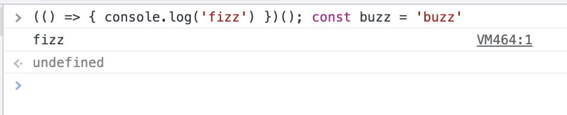
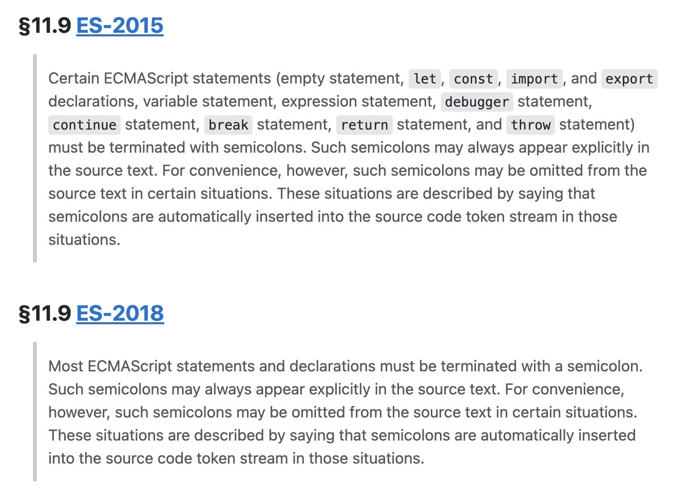

Afinal, preciso colocar ponto e vírgula ';' no meu código JavaScript?
← ← ← 9/26/2022, 9:32:48 AM | Posted by: Felippe Regazio
Em JS quase tudo pode ser uma expressão, nesse caso é mandatório que cada expressão seja separada por ;
Ou seja: ; é necessário em JS. Porém o JS possui um dispositivo que infere expressões e adiciona um ; automáticamente. Vamos falar disso agora
O que falamos acima chama-se ASI: Automatic Semicolon Insertion. É um dispositivo do JavaScript que adiciona o ; pra vc no final das expressões óbvias.
E aí que mora o perigo. Embora o ASI seja MUITO BOM em prever o ; automaticamente, ele pode falhar às vezes.
Se vc quiser saber quais os cenários em que o ASI vai atuar e inserir o ; automaticamente pra vc, só ler Esse Link:
Isso nos leva a 3 conclusões:
- Vírgulas são necessárias em JS
- Vc pode não colocar pq elas serão inseridas automaticamente pelo ASI
- O ASI não é 100% confiável
Como assim o ASI não é confiável? Bom, isso é porque inferir o fim de uma expressão nem sempre é simples pro parser, veja o exemplo abaixo:
function fizz() { console.log('fizz') } const buzz = 'buzz'

Não há nenhum ";" no exemplo acima, e ele rodou numa boa, isso pq temos dois "statements" óbvios:
- Declaração de uma função
- Declaração de uma constante
O parser sabe que uma função foi aberta e que um } é esperado para fechar o bloco, ou seja: fim explícito da expressão.
Quando a expressão termina a ASI adiciona o ; automáticamente (a grosso modo) e uma nova expressão inicia. Pra declaração é a mesma coisa, o parser infere a gramática de declaração (1 valor) e a ASI atua adicionando o ";" após a declaração.
O que é entendido no fim das constas é o seguinte:
function fizz() { console.log('fizz') } /* ; */ const buzz = 'buzz' /* ; */
Porém isso nem sempre acontece, pois nem sempre é fácil inferir o fim de uma expressão. Imagine que vc mude a sua função ali por uma IIFE. Ex:
(() => { console.log('fizz') })() const buzz = 'buzz'

Agora o código não roda, ele diz que encontrou um token inesperado chamado "const". Ué, o que houve?
Acontece que uma IIFE é uma expressão: Immediately invoked function expression. Ela termina chamando a si mesma, logo o delimitador final é um ")".
Porém um ")" também pode ser parte de qualquer expressão, inclusive aritmética. Logo um ")" é ambíguo. O parser não sabe dizer se ele está ali pq acabou a IIFE, ou se ele é parte de uma expressão maior, ou se ele abre prioridade aritmética...
O parser então segue com a expressão e encontra como próxima a palavra "const", que não faz parte da gramática interna da expressão. O parser não entende nada, fica doido e lança uma exception. A ASI nem chega a atuar.
A única forma de corrigir o problema acima é adicionando um ";" no final da ASI pra explicitar pro parser que aquela expressão terminou, e aí seu código funcionaria:
(() => { console.log('fizz') })(); const buzz = 'buzz'

Veja só, deu certo! Isso porque contamos pro parser que após o ultimo parenteses ")" nossa expressão acabou.
Mas porque isso acontece? Novamente: porque quase tudo pode ser uma expressão, e uma IIFE expressão é uma expressão funcional imediatamente invocada.
Ou seja, uma função que chama a si mesma imediatamente. Ela é parte de um contexto de expressão, te permitindo fazer coisas legais como: criar novos escopos; ou coisas desse tipo:
const fizzbuzz = (() => 'Fizz')() + ' Buzz'; // -> Fizz Buzz
Claro que o código acima é só um exemplo, não precisa fazer essa pirueta pra concatenar uma string. Mas IIFE são uteis nesses contextos em que vc quer produzir um valor numa expressão de forma mais complexa ou escopar um contexto. São muito utilizadas por bundlers, transpilers...
Mas voltando a nossa questão: Então ";" é requisito em JS? Sim, é. Mas vc tem um dispositivo que coloca ele automaticamente.
Minha dica é: não precisa virar a "polícia do ;". Vc provavelmente ta utilizando um framework em que o bundler vai arrumar ou avisar previamente boa parte desses casos, porém é bom codar adicionando ";" por costume, não custa nada e evita dores de cabeça inesperadas :)
Embora eu tenha dado uma dica, só trouxe aqui uma definição formal mostrando como as coisas acontecem low level, de forma informacional, esse post não deve ser entendido como uma imposição de regra. Se vc vai usar ; ou não, se vai colocar linter, se vai confiar na ASI, se vai forçar ;, se é projeto legado ou whatever é uma decisão de requisitos do seu projeto e baseada somente em suas necessidades.
Mas o que a Spec diz?
A própria spec do JS tanto 2015 e 2018 reconhece a ASI como sendo uma conveniencia mas a propria spec sugere o uso explicito do ; em terminações de expressões. segue print das spec:
A spec diz o que tentei dizer no post: A semicolon TEM que estar lá. em ALGUMAS situações ele sera convenientemente inserido automaticamente pela ASI, mas nem sempre. geralmente não usamos pq como dito na thread: usamos frameworks com bundlers que arrumam as armadilhas.
Quanto a implementações da engine do JS: a SPEC da ASI mudou bem pouco desde seu nascimento pra cá. As ferramentas de code safety/bundlers no entanto evoluíram bastante.
Hoje tanto minifiers quanto bundlers e linters são bem espertos em identificar armadilhas com ;